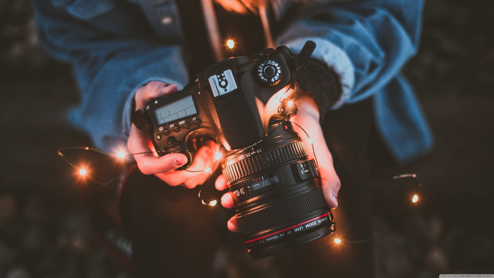

A diverse studio that operates in all branches of photography and filming, with interior and external photo shoots, the INSTANT studio was founded in 2019 by the photographer Mary Ryan and today has assembled a team of 4 photographers looking to capture the best moments.
We believe in spending time on photography, printing, and framing. We offer our clients beautiful, timeless artworks that will be enjoyed for generations.
Browse through our galleries to see honest portraits of real people and real moments. INSTANT offers a personal service to our customers. We create beautiful pieces for you.
Our focus is to always be in search of knowledge and training to be able to capture increasingly true, creative and impacting images of people and their moments. We see in each photo the art of storytelling and Bringing the story of life